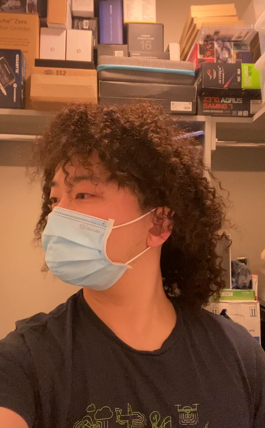
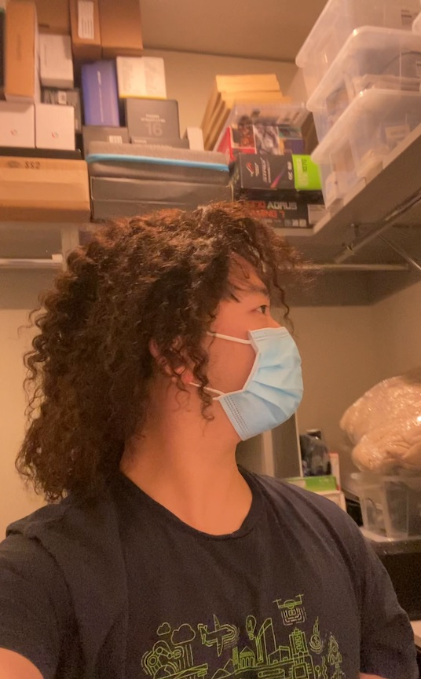

Visual Effects
Using nerfies you can create fun visual effects. This Dolly zoom effect would be impossible without nerfies since it would require going through a wall.
3D Foundation Models (3DFMs) such as VGGT have recently pushed the boundaries of 3D vision by predicting rich unified representations with feed-forward transformers. The scene representations learned by these models enable strong performance across multiple 3D vision tasks.
In this paper, we investigate using their internal representations to infer 3D structure in a scene from novel viewpoints. Our hypothesis is that, in order to solve the task of 3D reconstruction, these models must learn representations that capture a substantial amount of general knowledge about 3D scenes.
After demonstrating that hidden surfaces can be decoded from the internal representations of a 3DFM, we propose Z3D, a method that estimates pointmaps in unseen views by performing latent diffusion directly on 3DFM representations. We show that Z3D predicts realistic depth maps for novel views across multiple datasets, demonstrating that pretrained 3D foundation models provide a powerful latent space for generative 3D reconstruction.
Pick an example above to switch scenes.
Source Views
Target Views (4 target viewpoints)
Combined Point Clouds (all target views fused)
Drag to look around — all three point clouds spin automatically and stay in sync. Pick an example above to switch scenes.
Pick an example above to switch scenes.
Pick an example above to switch scenes.
Using nerfies you can create fun visual effects. This Dolly zoom effect would be impossible without nerfies since it would require going through a wall.
As a byproduct of our method, we can also solve the matting problem by ignoring samples that fall outside of a bounding box during rendering.
We can also animate the scene by interpolating the deformation latent codes of two input frames. Use the slider here to linearly interpolate between the left frame and the right frame.

Start Frame

End Frame
Using Nerfies, you can re-render a video from a novel viewpoint such as a stabilized camera by playing back the training deformations.
There's a lot of excellent work that was introduced around the same time as ours.
Progressive Encoding for Neural Optimization introduces an idea similar to our windowed position encoding for coarse-to-fine optimization.
D-NeRF and NR-NeRF both use deformation fields to model non-rigid scenes.
Some works model videos with a NeRF by directly modulating the density, such as Video-NeRF, NSFF, and DyNeRF
There are probably many more by the time you are reading this. Check out Frank Dellart's survey on recent NeRF papers, and Yen-Chen Lin's curated list of NeRF papers.
@article{park2021nerfies,
author = {Park, Keunhong and Sinha, Utkarsh and Barron, Jonathan T. and Bouaziz, Sofien and Goldman, Dan B and Seitz, Steven M. and Martin-Brualla, Ricardo},
title = {Nerfies: Deformable Neural Radiance Fields},
journal = {ICCV},
year = {2021},
}